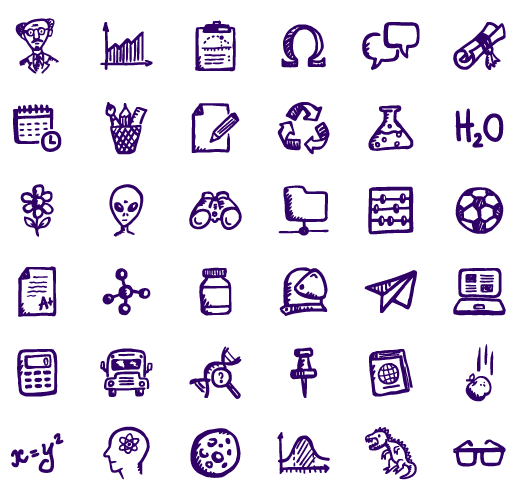

"Life would be tragic if it weren't funny."


JOB OBJECTIVE
- As a student my main objective is to gain experience, like how
it feels to work with other people sharing the same goal and helping each
other to achieve that goal. Also I want to use what I’ve learned in school,
discovering new skills and improving what I already have.

QUALIFICATIONS
- Physically and mentally healthy.
- Fast and accurate when making decision.
- I can follow well on instruction.
- I notice details other people don’t notice.

PERSONAL BACKGROUND
- Age: 19 years old
- Birth Date: July 25, 1997
- Height: 5"2"
- Weight: 52 kg.
- Birth Place: Davao City
- Nationality: Filipino
- Religion: Catholic
- Address: 478-3 J.P. Cabaguio Avenue Agdao, Davao City
- Cell phoneNo. +639461749445
EDUCATIONAL BACKGROUND
- Tertiary Education: University of Southeastern Philippines
Bachelor of Science in Information Technology
BO. Obrero, Davao City
SY. 2014- Present
- Secondary Education: Leon Garcia Sr. National High School
Leon Garcia St. Agdao, Davao City
SY. 20013-2014
- Primary Education: Jose L. Porras Elementary School
New Salmonan St. Agdao, Davao City
SY. 2009-2010
SKILLS
- Critical Thinking.
- I am good at research and can solve unfamiliar problems.
- Ability to use computers, office machines and Smartphones.
- I can type fast with 95% accuracy.
- I know how to use MS word, MS Excel, MS PowerPoint etc.
WORK EXPERIENCE
- Home base – doing task online(Tagging titling, rating, editing, annotating, reviewing)